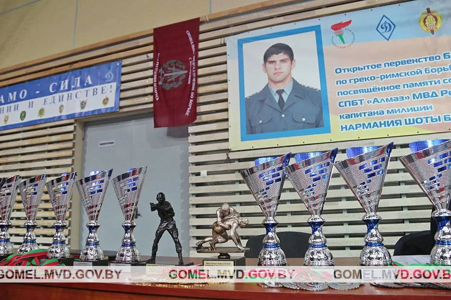

Греко-римская борьба
Шота Борисович Нармания (1977–2010) — мастер спорта по греко-римской борьбе, капитан милиции, сотрудник спецподразделения по борьбе с терроризмом «Алмаз» МВД Республики Беларусь, погибший при исполнении служебных обязанностей. Его имя носит ежегодный международный турнир по греко-римской борьбе среди юношей в Жлобине — один из самых статусных стартов для молодых борцов Беларуси и гостей из других стран.
Шота начал заниматься греко-римской борьбой в Жлобине, где спортивная среда быстро раскрыла его талант. Уже в юношеские годы он выделялся техникой и характером: умел терпеть, переламывать ход схватки и стабильно брать медали на республиканских и международных стартах.
Тренеры и товарищи по команде вспоминают его как человека, который не просто хотел побеждать, а стремился делать это «по-умному»: через тактическое чтение соперника, грамотное распределение сил и умение использовать малейшую ошибку противника.
После спортивной карьеры Шота выбрал службу — поступил в милицию и был зачислен в спецподразделение «Алмаз», одно из самых требовательных и профессиональных формирований МВД. Там ценили не только физическую подготовку, но и дисциплину, умение действовать в команде, хладнокровие и ответственность — качества, которые у него были отточены годами на борцовском ковре. Звание — капитан милиции. Коллеги отмечали его надёжность: если Шота брал задачу, он доводил её до конца и никогда не подводил команду. Погиб при исполнении служебных обязанностей в январе 2010 года. Его гибель стала большой утратой для сослуживцев, спортивной семьи и родного города.
С 2011 года в Жлобине ежегодно проводится Международный турнир БФСО «Динамо» по греко-римской борьбе среди юношей памяти капитана милиции Шоты Нармания. В нём участвуют сотни юных борцов из Беларуси и России, а сам турнир стал символом связи спорта и служения: он напоминает, что дисциплина, мужество и верность долгу — это ценности, которые воспитываются и на ковре, и в строю. Турнир проходит во Дворце игровых видов спорта Жлобина, собирает до 170 участников из разных регионов и входит в календарь ключевых юниорских стартов страны. На открытии традиционно звучит слово о подвиге Шоты, а на его могиле в день турнира совершается заупокойная лития — эту традицию поддерживают и спортсмены, и тренеры, и представители силовых структур.
Для жлобинской школы борьбы имя Шоты — не просто название турнира, а ориентир: он был тем, кто сумел соединить спортивный характер с настоящим гражданским мужеством.